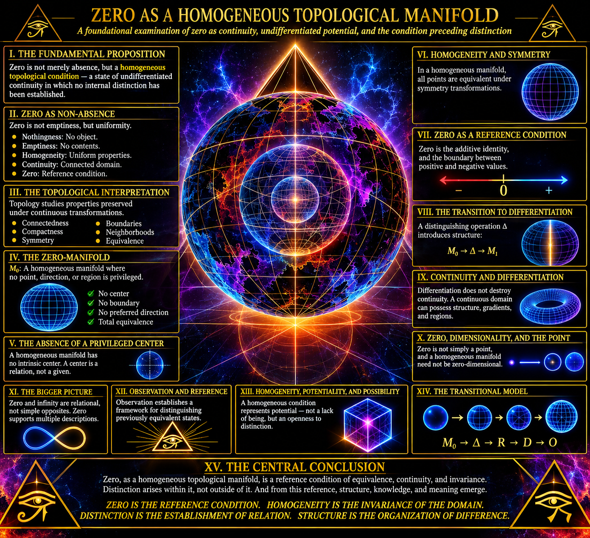

ZERO MANIFOLD

ZERO AS A HOMOGENEOUS TOPOLOGICAL MANIFOLD
A foundational examination of zero as continuity, undifferentiated potential, and the condition preceding distinction
I. THE FUNDAMENTAL PROPOSITION
Zero is conventionally represented as the numerical value of nothing, the absence of quantity, or the neutral element of addition.
However, these descriptions do not exhaust the conceptual significance of zero.
Zero can also be examined as a condition in which no distinction has been established between constituent positions, directions, orientations, or internal regions.
Under this interpretation, zero is approached not as an empty container but as a homogeneous topological condition.
A homogeneous condition is one in which the properties of the system remain invariant under the transformations being considered. No particular position, region, or orientation possesses an intrinsic privilege over another.
The central proposition is therefore:
Zero, considered as a homogeneous topological manifold, represents an undifferentiated condition of continuity in which distinctions of position, orientation, and internal organization have not yet been imposed.
This does not mean that zero must possess an infinite number of physical components, nor that it is necessarily a geometrical object.
Rather, it establishes a conceptual framework through which the relationship between continuity and differentiation can be investigated.
II. ZERO AS NON-ABSENCE
There is an important distinction between absence and homogeneity.
Absence describes the lack of something.
Homogeneity describes the uniformity of something.
These are not interchangeable conditions.
An empty container may have spatial extension despite containing no material objects. Conversely, a homogeneous medium may contain structure, properties, and continuous extension without exhibiting internal differentiation.
Zero, as a mathematical quantity, does not automatically imply either physical emptiness or spatial extension.
Nevertheless, as a conceptual model, homogeneous zero allows us to investigate a condition in which no internal distinction has been established.
The distinction can be expressed as follows:
- Nothingness: No object or quantity is present.
- Emptiness: A region contains no specified contents.
- Homogeneity: The properties of a domain remain uniform under the relevant transformations.
- Continuity: A domain possesses a connected structure without necessarily containing discrete separations.
- Zero: The numerical additive identity, which may also serve as a reference condition for measuring positive and negative departures.
The last distinction is particularly important.
Zero can function as a reference condition without being interpreted as an absence of all possible states.
It is the value from which departures can be measured.
III. THE TOPOLOGICAL INTERPRETATION
Topology is the mathematical study of properties preserved under continuous transformations.
Unlike conventional geometry, topology does not primarily concern itself with fixed distances, angles, or exact measurements.
It investigates relationships such as:
- Connectedness.
- Continuity.
- Compactness.
- Boundaries.
- Neighborhoods.
- Interior and exterior.
- Convergence.
- Equivalence under continuous deformation.
A topological space consists of a set of points together with a topology: a specified collection of open subsets satisfying particular mathematical conditions.
A manifold is a topological space that locally resembles Euclidean space of a particular dimension.
For example:
- A one-dimensional manifold locally resembles a line.
- A two-dimensional manifold locally resembles a plane.
- A three-dimensional manifold locally resembles ordinary three-dimensional space.
- Higher-dimensional manifolds locally resemble higher-dimensional Euclidean spaces.
A homogeneous manifold is one whose points are equivalent under its group of symmetries: for any two points, there exists an appropriate symmetry transformation mapping one to the other.
This property is called transitivity.
For the conceptual model of homogeneous zero, transitivity becomes especially significant.
No location is intrinsically distinguished from another.
No internal position is inherently central.
No direction is inherently preferred.
No particular region is intrinsically different from the remainder.
The manifold is therefore considered invariant under the transformations that preserve its defining structure.
Importantly, homogeneity does not require a manifold to be flat, featureless in every mathematical sense, or devoid of topology. A sphere, for example, is homogeneous under its rotational symmetries despite possessing curvature.
IV. THE ZERO-MANIFOLD AS AN UNDIFFERENTIATED DOMAIN
Consider a hypothetical domain in which every location is equivalent with respect to the properties under examination.
Let the domain be represented by:
M₀
Where:
M = the underlying manifold.
₀ = the designation of its undifferentiated reference condition.
M₀ is not intended as a new conventional mathematical object or an established notation. It is a conceptual designation.
Within this domain:
- No location has an intrinsic identity independent of the whole.
- No direction has an intrinsically privileged orientation.
- No internal boundary has been established.
- No discrete partition has been imposed.
- No hierarchy of positions has been assigned.
- No distinction between internal regions has been specified.
The domain is treated as homogeneous with respect to its defining properties.
This does not eliminate the possibility of mathematical coordinates.
Coordinates can be assigned to a homogeneous manifold without making any coordinate position physically or intrinsically privileged.
A coordinate system describes relationships from a selected reference frame. It does not necessarily reveal an intrinsic hierarchy within the underlying space.
This distinction separates description from constitution.
The manifold may be described through coordinates without being constituted by those coordinates.
V. ZERO AND THE ABSENCE OF A PRIVILEGED CENTER
A particularly important consequence of homogeneity concerns the center.
In ordinary geometry, a center is defined through a particular geometrical construction.
For example, a circle has a center relative to its boundary and metric structure.
However, a homogeneous manifold does not necessarily possess a globally privileged center.
An infinite homogeneous line has no unique central point.
A homogeneous circle has no preferred point on its circumference.
A sphere possesses a geometrical center in its surrounding Euclidean embedding space, but its intrinsic surface geometry does not privilege one point on its surface over another.
This introduces a useful distinction:
A geometrical center is not necessarily an intrinsic center of differentiation.
For the zero-manifold model, no intrinsic center is established before a reference condition or differentiation is introduced.
A center may subsequently emerge as a relational property.
It may be defined by an observer, a boundary, a distribution, a coordinate transformation, or a particular organizational arrangement.
The center is then a consequence of a specified relationship rather than an unquestionable original property.
VI. THE HOMOGENEOUS CONDITION AND SYMMETRY
Homogeneity is closely related to symmetry.
A system is symmetric with respect to a transformation when the transformation preserves the properties being considered.
In a homogeneous manifold, transformations can map one point to another while preserving the relevant structure.
This produces an important conceptual consequence:
No point possesses an exclusive identity simply by virtue of its position.
Position becomes meaningful through relationships.
A point can be distinguished from another point through an assigned coordinate, a measurement, or a relationship to a reference.
Without such a distinction, the positions remain equivalent under the relevant symmetry transformations.
This does not mean that all points are literally the same point.
They remain mathematically distinct elements when the underlying manifold contains multiple points.
Rather, they are equivalent with respect to the properties preserved by the symmetry group.
This is the difference between identity and equivalence.
Identity asks whether two objects are the same.
Equivalence asks whether two objects possess the same relevant properties under a specified relation.
The homogeneous zero model concerns equivalence before the introduction of a distinguishing reference.
VII. ZERO AS A REFERENCE CONDITION
Zero has a special position in mathematics because it serves as the additive identity.
For any number x:
x + 0 = x
This means that zero introduces no change to the numerical value under addition.
It is neutral with respect to that operation.
This property provides a useful mathematical analogy for the homogeneous condition.
A transformation that preserves a state leaves its defining properties unchanged.
Likewise, the additive identity preserves a numerical value when added to it.
However, these are different mathematical structures.
The additive identity belongs to an algebraic system.
Homogeneity belongs to the study of spaces and their symmetries.
Their conceptual relationship is that both concern invariance under a specified operation.
Zero also provides the reference separating positive and negative numerical values.
For the real number line:
x > 0
x = 0
x < 0
Zero is the boundary between positive and negative values in the ordered real numbers.
It is not itself a positive or negative quantity.
This gives zero a relational significance.
Its position is defined not simply by an absence of magnitude, but also by its relationship to the ordering of the number system.
VIII. THE TRANSITION FROM HOMOGENEITY TO DIFFERENTIATION
The most important conceptual transition occurs when an initially homogeneous condition acquires a distinction.
Let the original condition be designated:
M₀
Now introduce a distinguishing operation:
Δ
The operation Δ represents the establishment of a difference within the previously undifferentiated domain.
This difference might take the form of:
- A reference point.
- A boundary.
- A direction.
- A measurement.
- A partition.
- A gradient.
- A variation in a field.
- A localized observation.
- A change in a defining property.
The result is a differentiated domain:
M₀ → Δ(M₀)
The arrow represents a conceptual transition, not necessarily a physical event or a process occurring in time.
The original homogeneous condition is now described through distinctions.
A distinction does not necessarily destroy the underlying continuity.
A continuous domain may acquire boundaries, coordinate systems, fields, or localized structures while remaining topologically connected.
This is a crucial point.
Differentiation and discontinuity are not synonymous.
A smooth surface can contain gradients.
A continuous field can contain variations.
A connected manifold can contain multiple distinguishable regions.
The establishment of distinction therefore does not require the destruction of the original domain.
IX. THE FIRST DISTINCTION
A particularly useful mathematical analogy comes from the distinction between a domain and a subset.
Let M be a topological space.
A subset A of M may be identified.
Once A is specified, its complement can also be identified:
M \ A
This establishes a distinction between a selected region and everything outside that region.
The distinction is relational.
A is defined relative to M.
Its complement is defined relative to A and M.
Neither description requires the entire domain to become disconnected.
The original space may remain continuous.
This provides a formal analogy for the emergence of differentiation:
- An undifferentiated domain is considered.
- A reference condition is established.
- A distinction is specified.
- A region becomes identifiable.
- Relationships between regions become describable.
- The resulting organization becomes available for further differentiation.
This is not the creation of something from mathematical nothing.
It is the establishment of distinguishability within an already specified framework.
X. ZERO, DIMENSIONALITY, AND THE POINT
The relationship between zero and dimension requires particular care.
A zero-dimensional manifold is not necessarily the same thing as a homogeneous zero-manifold.
The number zero and the dimension zero refer to different mathematical concepts.
A zero-dimensional manifold is locally modeled on ℝ⁰.
Since ℝ⁰ contains exactly one point, a zero-dimensional manifold is a discrete topological space.
A single point is the simplest example.
It has no spatial extension within its own dimensional description.
However, a homogeneous manifold need not be zero-dimensional.
An infinite line, a circle, a plane, or a sphere may all exhibit homogeneity.
Consequently, the conceptual zero-manifold proposed here should not automatically be identified with a zero-dimensional manifold.
Instead, zero is being used to designate the undifferentiated reference condition, while dimensionality describes the local structure of the domain.
These concepts must remain separate.
This separation permits a more expansive investigation.
The homogeneous condition may be modeled using spaces of different dimensions depending on what properties the model is intended to represent.
XI. CONTINUITY WITHOUT INTERNAL DIFFERENTIATION
A continuous space can possess extension without requiring discrete segmentation.
Consider the real number line.
Between any two distinct real numbers, infinitely many other real numbers exist.
There is no immediate numerical successor to a real number.
This property is called density.
The real number line also possesses connectedness under its usual topology.
It cannot be partitioned into two nonempty disjoint open subsets.
This makes it a useful mathematical reference for thinking about continuity.
However, the real number line is not homogeneous zero merely because it is continuous.
It is an ordered, one-dimensional manifold with an established mathematical structure.
The conceptual model instead asks what it would mean to regard continuity before assigning a privileged internal reference or differentiation.
The distinction is subtle but fundamental.
Continuity describes how a domain is connected.
Homogeneity describes how its properties remain equivalent across the domain.
Zero, in the present framework, designates the reference condition in which no distinguishing variation has yet been specified.
XII. THE RELATIONSHIP BETWEEN ZERO AND INFINITY
Zero and infinity are often treated as opposites.
However, they are not simple numerical opposites in the real number system.
Zero is a real number.
Infinity is not an ordinary real number.
The expression 1/0 is undefined, and zero cannot be treated as an ordinary numerical route to infinity.
Nevertheless, zero and infinity can be examined relationally through limits.
For example:
As x approaches zero from the positive side:
1/x → +∞
As x approaches zero from the negative side:
1/x → -∞
The behavior differs depending on the direction of approach.
This demonstrates that a reference condition can possess radically different limiting behaviors depending on the relationship imposed upon it.
In topology and analysis, neighborhoods and limiting processes provide ways to investigate behavior around a point without requiring the point itself to possess the properties of its surroundings.
For the homogeneous zero model, this introduces a valuable question:
Can an undifferentiated reference condition support multiple possible descriptions once distinct approaches, transformations, or measurement relationships are established?
Mathematically, the answer depends on the structure of the chosen space and operations.
Conceptually, this provides the foundation for investigating differentiation without assuming that every possible distinction was already intrinsically present.
XIII. OBSERVATION AND THE ESTABLISHMENT OF REFERENCE
An observer does not necessarily create the domain being observed.
However, observation establishes a relationship between an observer, a reference frame, and the object or condition being described.
The act of measurement introduces distinguishability.
A coordinate system identifies positions.
A measurement establishes values.
A boundary identifies an inside and an outside.
A comparison establishes difference.
The observer therefore participates in the construction of a description.
This must not be confused with the stronger claim that consciousness creates physical reality.
That claim would require independent evidence and cannot be derived from topology alone.
The more defensible proposition is:
Observation establishes a relational framework through which previously equivalent or unspecified properties can become distinguishable.
The observer supplies a reference.
The reference allows comparison.
Comparison permits differentiation.
Differentiation permits classification and further investigation.
The resulting structure is not necessarily imposed upon reality in its entirety. It may instead represent the particular resolution through which reality is being examined.
XIV. HOMOGENEITY, POTENTIALITY, AND POSSIBILITY
A homogeneous condition may be conceptually associated with potentiality.
Potentiality here does not mean that every conceivable outcome physically exists inside zero.
Rather, it means that the initial description has not yet selected or specified a particular differentiated arrangement.
A domain without an assigned internal distinction remains open to multiple possible descriptions.
These descriptions may be generated by different coordinate systems, partitions, transformations, measurements, or boundary conditions.
The distinction is between:
- What is specified.
- What is not yet specified.
- What is mathematically permitted.
- What is physically realized.
These four categories should not be collapsed into one another.
A possibility is not automatically an actuality.
A mathematical construction is not automatically a physical phenomenon.
An unspecified property is not necessarily a hidden property waiting to be discovered.
This distinction protects the model from confusing conceptual potential with physical substance.
XV. THE ZERO-MANIFOLD AS A FOUNDATIONAL REFERENCE
The homogeneous zero model can now be summarized through five foundational properties.
- Equivalence
No point, region, or orientation is intrinsically privileged with respect to the defining properties of the model.
- Continuity
The underlying domain may be treated as continuous, without requiring discrete internal segmentation.
- Invariance
The defining properties remain preserved under the transformations that characterize the homogeneous structure.
- Undifferentiated reference
No particular internal distinction has been selected as the defining reference of the model.
- Differentiability of description
Distinct descriptions, partitions, coordinate systems, and relational structures may subsequently be introduced without necessarily destroying the continuity of the underlying domain.
These properties establish zero as a conceptual reference for the investigation of how distinction emerges from homogeneity.
XVI. THE TRANSITIONAL MODEL
The relationship can be represented schematically:
M₀ → Δ → R → D → O
Where:
M₀ = Homogeneous reference condition.
Δ = Establishment of distinction.
R = Relational organization.
D = Differentiated structure.
O = Observable or describable organization.
This sequence is conceptual rather than a universal physical law.
It describes a possible order of formal development:
First, a domain is considered without a privileged internal distinction.
Second, a distinguishing operation is introduced.
Third, relationships become identifiable.
Fourth, the resulting distinctions produce an organized structure.
Finally, that structure becomes available for observation, measurement, and interpretation.
The process may be recursive.
A differentiated region may itself become the subject of a new homogeneous reference model.
A new distinction may then be introduced within it.
Thus:
M₀ → Δ₁ → M₁ → Δ₂ → M₂ → Δ₃ ...
Each newly differentiated structure may serve as the reference condition for further differentiation.
This establishes a recursive framework in which homogeneity and differentiation are not necessarily mutually exclusive final states.
They are relational conditions that may occur at different levels of description.
XVII. THE CENTRAL CONCLUSION
Zero, considered as a homogeneous topological manifold, provides a conceptual means of examining existence prior to the establishment of internal distinction.
Its significance is not restricted to the absence of quantity.
It can be approached as a reference condition of equivalence, continuity, and invariance.
Within this framework, no position is intrinsically privileged, no internal boundary has been selected, and no particular orientation has been established as fundamental.
The introduction of distinction changes the descriptive organization of the domain.
A reference emerges.
Relationships become identifiable.
Differences become measurable.
Structure becomes describable.
Yet the establishment of distinction does not necessarily eliminate continuity or invalidate the original homogeneous condition.
The original domain remains the reference against which differentiation can be understood.
The deeper implication is that distinction need not be treated as the opposite of continuity.
Distinction can arise within continuity.
Homogeneity can provide the reference against which variation becomes meaningful.
And zero can function not merely as a numerical absence, but as a foundational conceptual reference for examining the relationship between equivalence and difference.
ZERO IS THE REFERENCE CONDITION. HOMOGENEITY IS THE INVARIANCE OF THE DOMAIN. DISTINCTION IS THE ESTABLISHMENT OF RELATION. STRUCTURE IS THE ORGANIZATION OF DIFFERENCE.
The investigation therefore begins not with the assumption that nothing exists, but with a more precise question:
What is the nature of a domain before any particular distinction has been established within it?